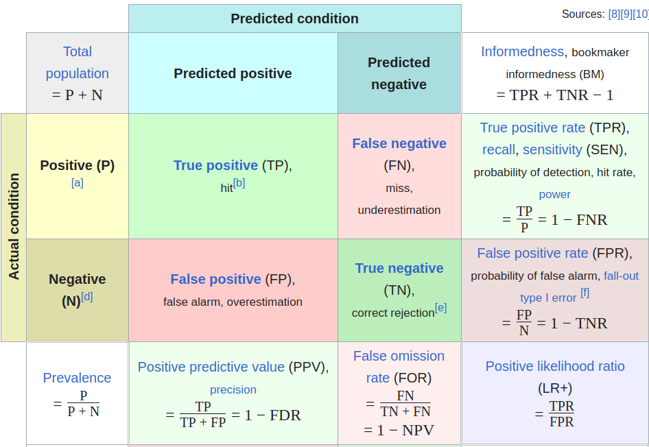

Trading off false positives and negatives
Thresholded families of classifiers and ROC curves
In fact, thresholding classifiers each lead to not just one but a whole family of classifiers. Take the binary case, and suppose we classify \(\hat{y}_n = \mathrm{I}\left(f(\boldsymbol{x}) \ge t\right)\) for any \(t\). At \(t= 0\) we recover the simple thresholding estimate from above. As \(t\) increases we classify more \(0\)’s, and as \(t\) decreases we classify more \(1\)’s. In a sense, \(t\) is a hyperparameter which we can tune to achieve classifiers with different characteristics.
There are two different kinds of errors we can make in binary classification: we can have “false negatives” (\(\hat{y}= 0\) but \(y= 1\)) and “false positives” (\(\hat{y}= 1\) but \(y= 0\)). Analogously, there are two kinds of correct classifications: “true positives” (\(\hat{y}= 1\) and \(y= 1\)) and “true negatives” (\(\hat{y}= 0\) and \(y= 0\)).
As we decrease the threshold \(t\), we classify more things as positive, changing some \(\hat{y}\) from \(0\) to \(1\). Some of the newly classifed positives will be true, some will be false. In the limit of \(t\rightarrow \infty\), we will classify everything as \(\hat{y}= 0\), and we will have no false positives but also no true positives. Conversely, as \(t\rightarrow \infty\) we will classify everything as \(\hat{y}= 1\), and the proportion of true positives and false positives will just be the proportions of \(y= 1\) and \(y= 0\) in the overall population.
It is usually ambiguous whether the the data on which we are counting classification errors are in the population, the training set, or the test set; in principle, you could define these counts for any of these populations. Be sure to say what you mean in context.
Some key terminology
In order to quantify the tradeoffs of changing the threshold on a classifier, there are some commonly used names of various combinations of quantities.

For this class, the key quanties are:
- “True positive rate (TPR):” \(TP / T\)
- “False positive rate (FPR):” \(FP / N\)
A different breakdown of the same idea is:
- “Sensitivity”, or also “Recall:” \(TP / T\)
- “Specificity:” \(TN / N\)
These two breakdowns are essentially the same. Note that sensitivity, recall, and TPR are all the same. Further, since \(N = TN + FP\) (a negative example is either correctly or incorrectly classified), we have \(TN / N = (N - FP) / N = 1 - FP / N\), so specificitiy is just one minus the FPR.
I will tend to use TPR and FPR.
This nomenclature is standard. But I (Ryan) don’t like any of it.
- The term “true positive” should be reserved for \(P\), instances which are, you know, truly positive, with \(y_n = 1\). “Correct positive” would be better. Similar for true negatives.
- “True positive rate” is fine, but then “false positive rate” should have the same denominator, rather than a different one. That is, the term “false positive rate” should, to me, be \(FP / T\) by analogy.
- Besides the vagueness of the terms “specificity” and “sensitivity,” these terms don’t respect the fundamental symmetry between the two classes. By giving special names, the implicit assumption is that one class, the “positives,” are somehow rarer or more important then the negatives. If you simply relable your problem, sensitivity becomes specificity and vice-versa.
I mention this only so you can feel some solidarity if you find it confusing or difficult to remember.
The right tradeoff between true and false positives depends on the application. The credit default classification example of @isl:2021:gareth table 4.4 is a good example.
The effect of changing \(t\)
As increase the threshold \(t\), we take some observations and flip \(\hat{y}_n\) from \(\hat{y}_n = 1 \rightarrow 0\). When we do this
- Neither \(T\) nor \(F\) changes
- \(TP\) and \(FP\) can only go down (there are fewer \(\hat{y}_n = 1\))
The best thing that can happen is if all the \(\hat{y}_n = 1\) that we change were false; in that case, the \(TPR\) stays the same and the \(FNR\) goes down. The worst thing that can happen is the reverse.
What if we classify everything as \(\hat{y}_n = 1\)? Then
- \(TP = T\), so \(TPR = 1\) (every \(y_n = 1\) has \(\hat{y}_n = 1\))
- \(FP = N\), so \(FPR = 1\) (every \(y_n = 0\) has \(\hat{y}_n = 1\))
Similarly, if we classify everything as \(\hat{y}_n = 0\), then
- \(TP = 0\), so \(TPR = 0\) (every \(y_n = 1\) has \(\hat{y}_n = 0\))
- \(FP = 0\), so \(FPR = 0\) (every \(y_n = 0\) has \(\hat{y}_n = 0\)).
Plotting the effect of changing \(t\): The ROC curve
We can plot the effect of changing \(t\) on a curve that places the FPR on the x-axis and TPR on the y-axis.
- What does a perfect classifier look like?
- What does a random classifier look like?
In your homework, you will study why
- An ROC curve should never be below the 45 degree line
- An ROC curve should never be concave.
Basically, if you have a classifier that violates these rules, you can construct a classifer that is no worse that does not violate these rules.
Since the ROC curve is a whole curve, it can be convenient to reduce it to a single number, the AUC, or “area under the curve.” However, it should be noted that AUC is not the whole story. For example, if you require that TPR is greater than some threshold, there may be a classifer that achieves that with better FPR than a different classifier with a better AUC.
The ROC curve and trading off errors
Suppose we have an imbalanced zero–one loss function of the form \[ \mathscr{L}(\hat{y}, y) = \alpha \mathrm{I}\left(y= 0, \hat{y}= 1\right) + \mathrm{I}\left(y= 1, \hat{y}= 0\right) \] for some \(\alpha > 0\). That is, we pay a different cost for false negatives than we do for false positives. Writing \(FP = \mathbb{E}_{\vphantom{}}\left[\mathrm{I}\left(y= 0, \hat{y}= 1\right)\right]\) and \(FN = \mathbb{E}_{\vphantom{}}\left[\mathrm{I}\left(y= 1, \hat{y}= 0\right)\right]\), and assuming for simplicity that each are continuous in the threshold \(t\), we have \[ \begin{aligned} \mathscr{R}(t) = {}& \alpha FP(t) + FN(t) \\={}& \alpha FP(t) + P - TP(t), \end{aligned} \] noting that the number of positives does not depend on \(t\). Differentiating with respect to \(t\) gives that, at the risk minimizer, \[ \frac{\frac{d\, TP}{dt}}{\frac{d\, FP}{dt}} = \alpha. \] Note also that the slope of the ROC curve at the optimal classifier is given by \[ \frac{d\, TPR / dt}{d\, FPR / dt} = \frac{N}{P} \frac{d\, TP / dt}{d\, FP / dt} = \frac{N}{P} \alpha. \] It follows that the points on the ROC curve trace out different tradeoffs in the risk between false negatives and false positives.